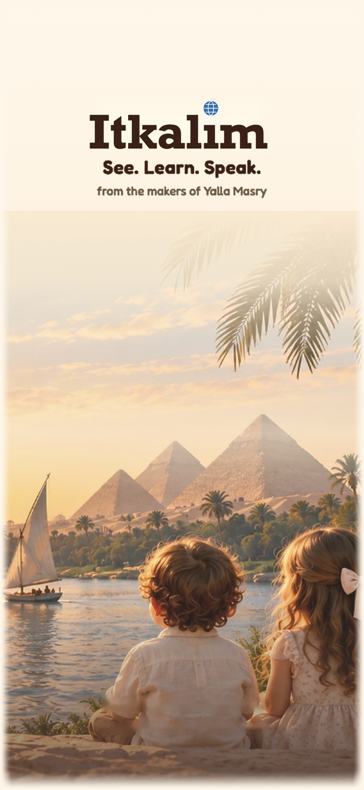
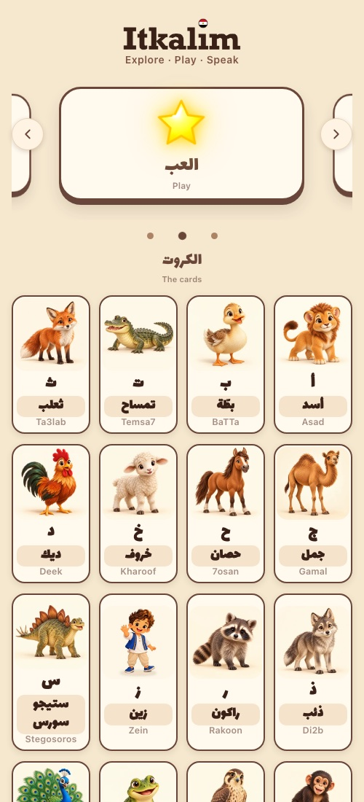
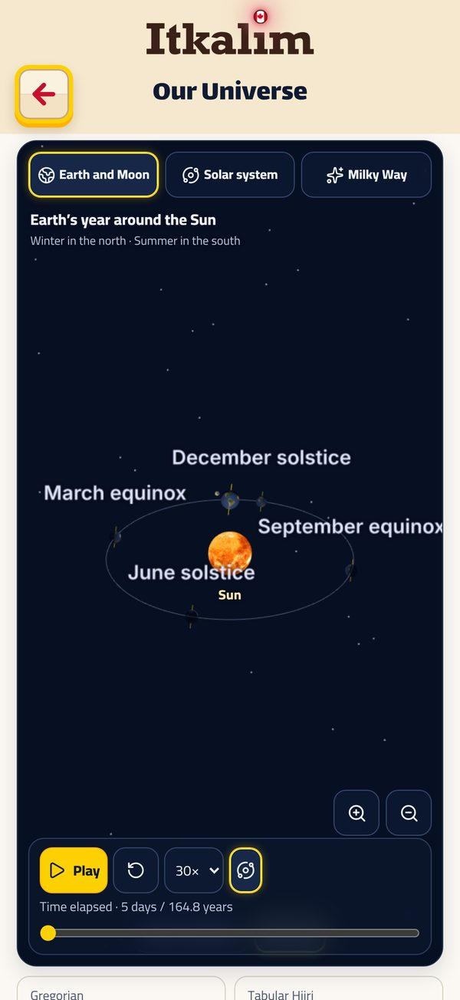
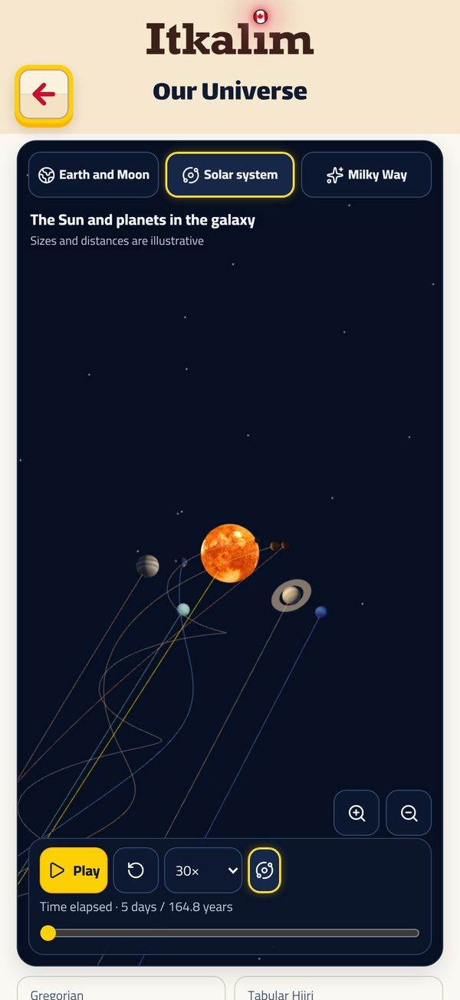
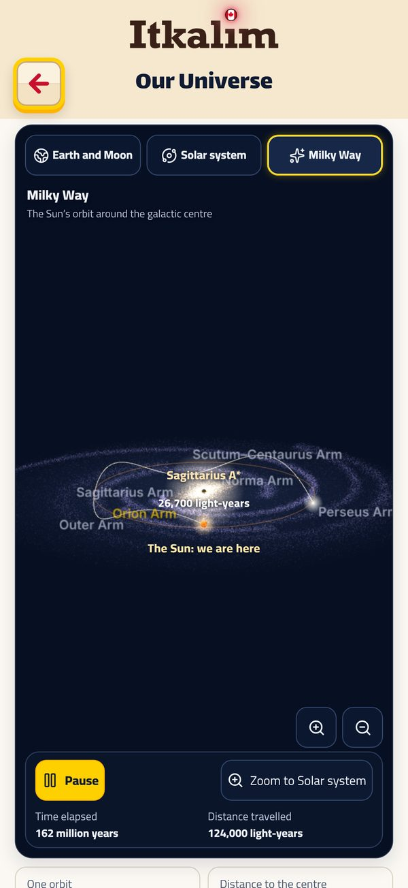

™
™Itkalim · اتكلم · “speak”
The world’s languages,
made for little ones.
First words in your family’s language, through gentle play. Egyptian Arabic, Turkish and Canadian English are ready now. Bulgarian is coming next.
Listen.
Learn. Speak.
First words become play: find the right animal, trace a letter with your finger, count on a flipping airport board, and explore My body, from the heart to the bones. Each game uses real voices.




Our Universe.
Watch Earth turn from day to night and the Moon go through its phases. Drag the Earth around the Sun to see the seasons, follow the planets on their real paths, then fly out to the Milky Way and ride the Sun’s 220-million-year orbit around the galaxy’s centre.




One app, the world’s languages.
Itkalim grew out of Yalla Masry, our Egyptian Arabic app, with a bigger goal: to help every child hear and speak the language of their family, wherever that family comes from. Each language is recorded by real native speakers and taught through the same gentle games.
Want another language next? Tell us.
Your voice, kept at home.
Parents can record the game’s short lines in their own voice, so your child hears you ask “فين الجمل؟” and cheer “برافو!”. Pick “Record your own voice · سجّل صوتك” on the first screen, or find it any time in For Parents. Any line you skip stays in the family voice you picked.
Nothing leaves your phone. Your recordings stay on your device. They are never uploaded, shared or used to make other voices, and deleting the app deletes them. Recording opens only after a grown-up question. Read our Privacy Policy.